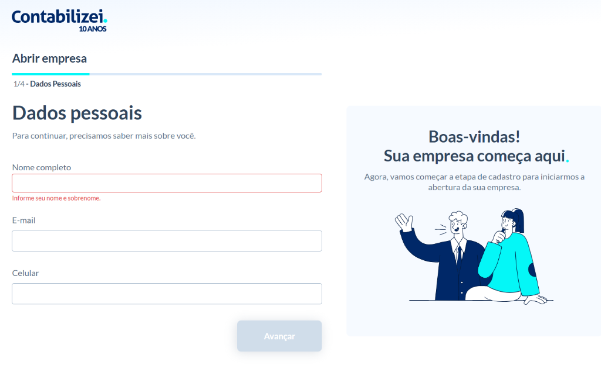
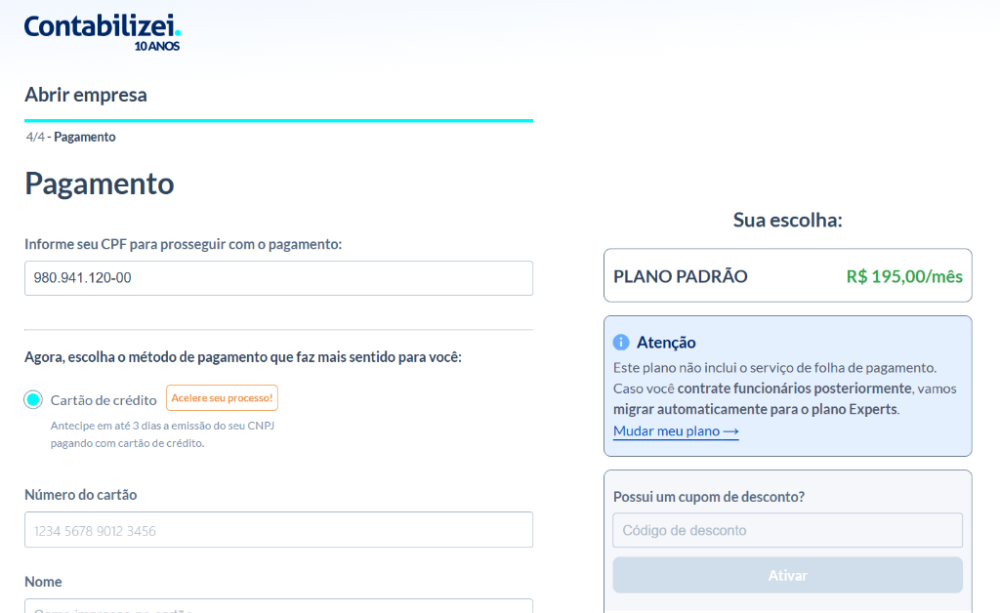
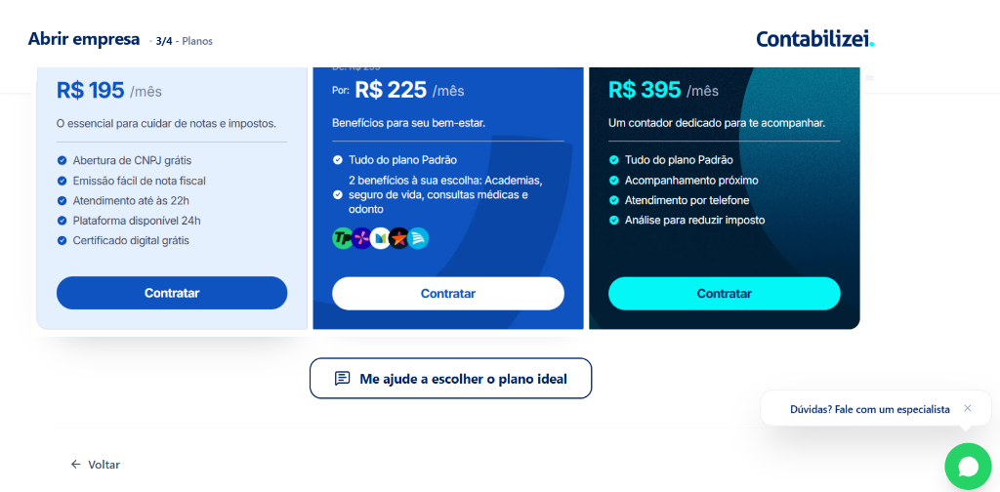
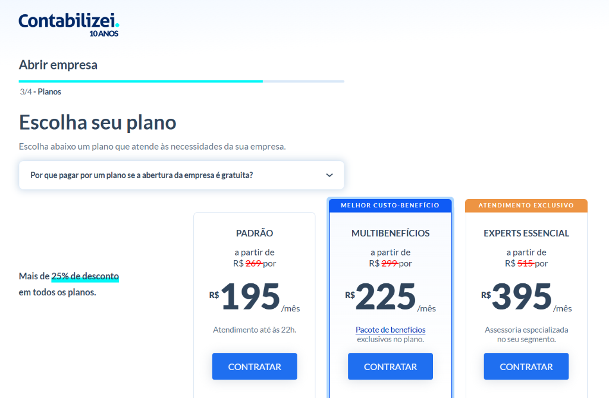

Como destravamos a conversão de um dos maiores ecossistemas contábeis do país integrando pesquisa aprofundada de comportamento (Discovery) e prototipação acelerada orientada por IA Generativa.
A auditoria técnica e comportamental revelou um fluxo excessivamente moroso, onde validações síncronas de API e barreiras cognitivas destruíam o ROI de aquisição.


Combinamos observação passiva em escala no checkout legado com entrevistas em profundidade, potencializadas pelo uso da IA na clusterização dos achados.
Etapas densas sem feedback progressivo, causando sobrecarga mental no preenchimento.
Leads altamente qualificados abandonavam por fricção técnica, encarecendo a aquisição líquida.
Mensagens de validação genéricas que não instruíam como sanar impedimentos de CNPJ.
Usuários com dúvidas tributárias complexas ficavam presos no autoatendimento sem suporte humano.
Gatilhos limitados a modais de intenção de saída (exit-intent), sem orientação antecipada de planos.
E-mails transacionais genéricos de carrinho abandonado com taxa nula de reengajamento.
Decisões tomadas com co-autoria desde o discovery, extinguindo gargalos clássicos de handoff e atritos de viabilidade técnica.
Envolvimento direto de especialistas em arquitetura de APIs e dados contábeis logo no desenho inicial das experiências.
Cerimônias diárias orientadas por hipóteses de funil, métricas de tempo de sessão e testes contínuos de usabilidade.
Fluxo de autoatendimento direto para perfis autônomos padronizados. Foco em reduzir atritos cognitivos e unificar etapas burocráticas.
Consultas fiscais executadas em background. Eliminação de spinners bloqueantes e telas travadas durante a validação na Receita Federal.
Roteamento inteligente em tempo real: casos tributários com complexidade societária transbordam imediatamente para consultores humanos.
Fundação necessária às 3 rotas: prototipação com IA gerando interfaces funcionais e tokens em código antes de qualquer commit na squad de engenharia central.
Transformação profunda de formulários engessados em uma experiência guiada, fluida e assistida proativamente pelo motor de inteligência artificial.


A simplificação de inputs e as chamadas assíncronas via Fast API reduziram o tempo de jornada de >27 min para ~16 min, estancando a perda de leads pagos.
Roteamento inteligente orientado por IA identificando hesitação e complexidade societária em tempo real, acionando o transbordo humano no momento crítico.
Nova arquitetura visual de planos e assistente consultivo de IA aumentaram a percepção de valor e a adesão aos pacotes Multibenefícios e Experts.